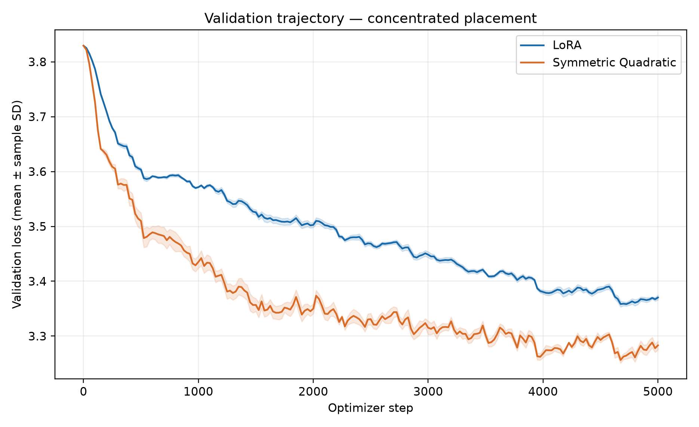
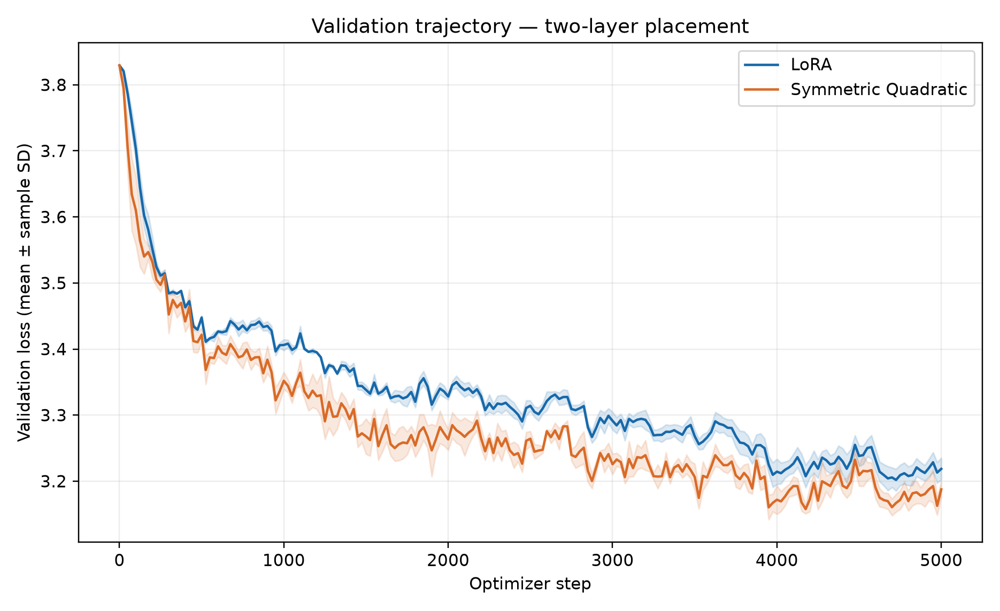
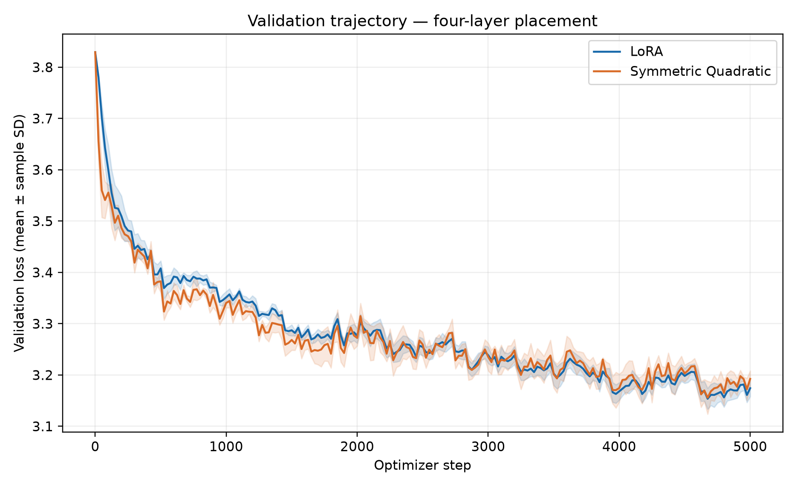
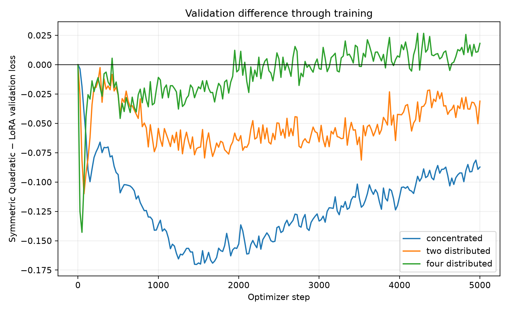
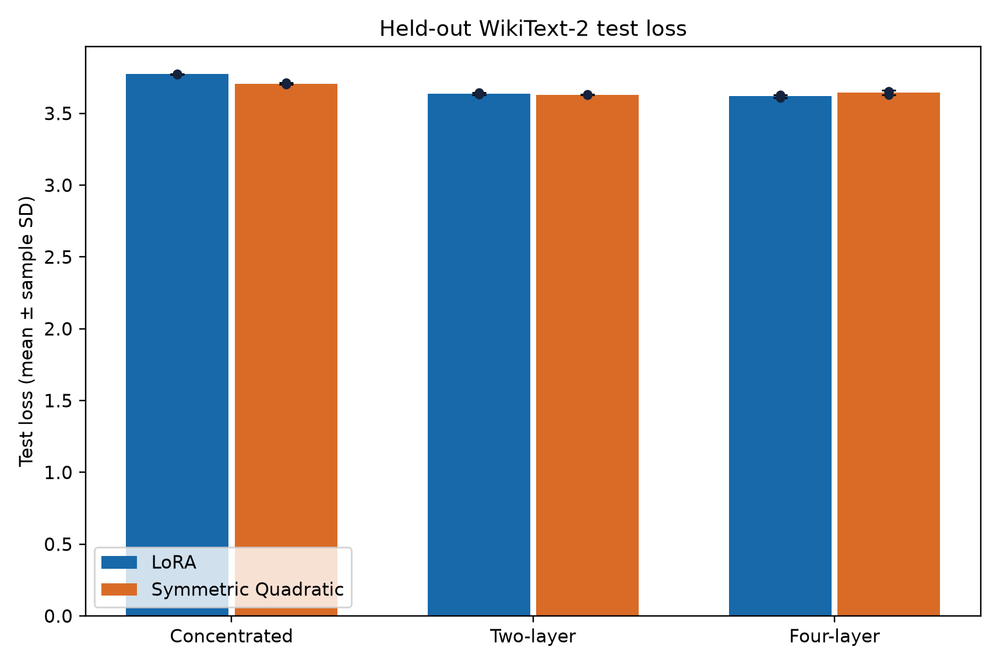
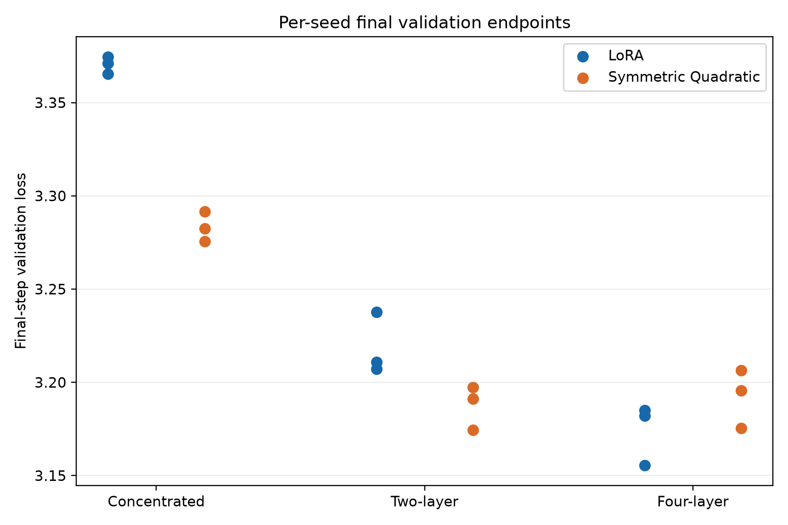
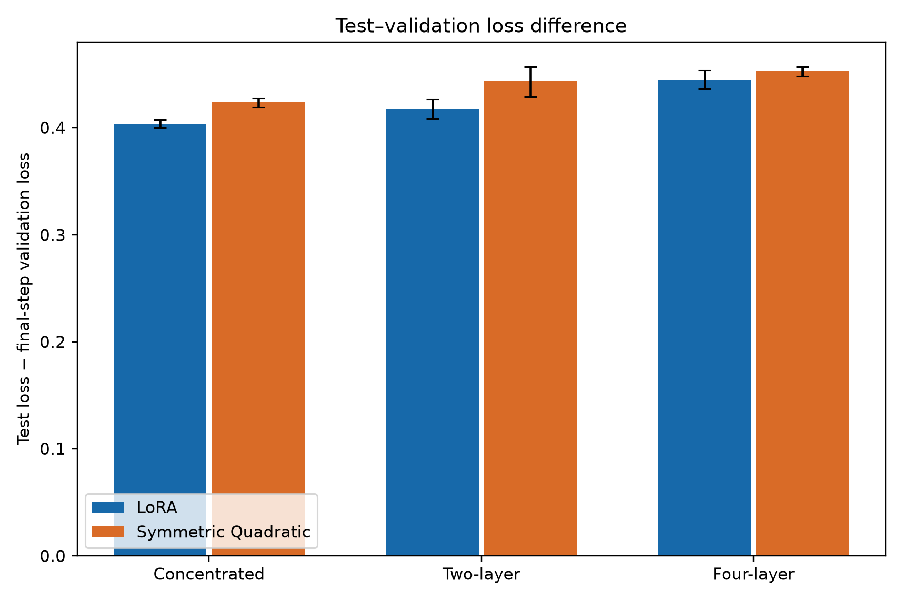

Research Project 01 · Results
What the controlled study found
The final evidence compares LoRA and Symmetric Quadratic at 12,288 matched trainable parameters for 5,000 optimizer steps. Every result is the mean ± sample SD across seeds 42, 123, and 456; lower loss and perplexity are better.
Final validation at the predeclared step-5,000 checkpoint
Do not confuse this table with best recorded validation. These are exact evaluations at step 5,000. The three geometries are concentrated block [2] with rank 8; blocks [0,11] with rank 4 each; and blocks [0,3,7,11] with rank 2 each. Block indices are zero-based.
| Geometry | LoRA | Symmetric Quadratic | Symmetric − LoRA loss |
|---|---|---|---|
| Concentrated | 3.3703 ± 0.0045; 29.09 ± 0.13 PPL | 3.2831 ± 0.0080; 26.66 ± 0.21 PPL | −0.0872 |
| Two-layer | 3.2186 ± 0.0166; 25.00 ± 0.42 PPL | 3.1876 ± 0.0119; 24.23 ± 0.29 PPL | −0.0310 |
| Four-layer | 3.1743 ± 0.0162; 23.91 ± 0.39 PPL | 3.1925 ± 0.0157; 24.35 ± 0.38 PPL | +0.0182 |
Negative signed differences favour Symmetric. The endpoint advantage is substantial when capacity is concentrated, smaller with two insertion points, and within the observed seed variability in the four-layer case.




Held-out WikiText-2 test
Test evaluation uses the final step-5,000 checkpoint selected before test evaluation. Frozen GPT-2 has test loss 4.1279 and PPL 62.05 on 2,213 128-token blocks.
| Geometry | LoRA | Symmetric Quadratic | Test interpretation |
|---|---|---|---|
| Concentrated | 3.7741 ± 0.0022; 43.56 ± 0.10 PPL | 3.7067 ± 0.0060; 40.72 ± 0.24 PPL | Symmetric test PPL is 6.52% lower from unrounded means. |
| Two-layer | 3.6361 ± 0.0075; 37.95 ± 0.29 PPL | 3.6306 ± 0.0025; 37.74 ± 0.09 PPL | Near tie in this sample. |
| Four-layer | 3.6192 ± 0.0115; 37.31 ± 0.43 PPL | 3.6452 ± 0.0149; 38.29 ± 0.57 PPL | LoRA has lower mean test loss. |
The largest within-placement advantage is concentrated Symmetric. The best Symmetric mean test configuration is two-layer. The best overall observed mean test configuration is four-layer LoRA. Symmetric therefore does not consistently outperform LoRA on held-out text.



Best recorded validation is a separate secondary summary
| Geometry | LoRA | Symmetric Quadratic |
|---|---|---|
| Concentrated | 3.3577 ± 0.0041 | 3.2559 ± 0.0048 |
| Two-layer | 3.2003 ± 0.0178 | 3.1520 ± 0.0126 |
| Four-layer | 3.1537 ± 0.0204 | 3.1557 ± 0.0320 |
The four-layer best-recorded difference is about +0.0020. It must not be used as the step-5,000 endpoint difference, which is +0.0182.
Historical evidence and limits
Earlier 500-step adapter-family tests, 1,000-step placement screens, and separate 2,000-step fixed-budget studies are retained in the technical report. They used different durations and, in some cases, budgets; they are not stitched into the fresh 5,000-step trajectories. The current results demonstrate trainability and useful capacity in selected placements, while leaving generalization to other models, data, and tasks untested.